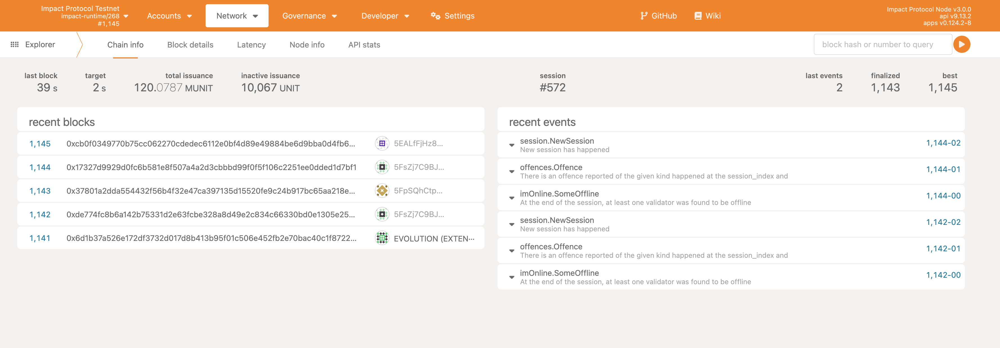
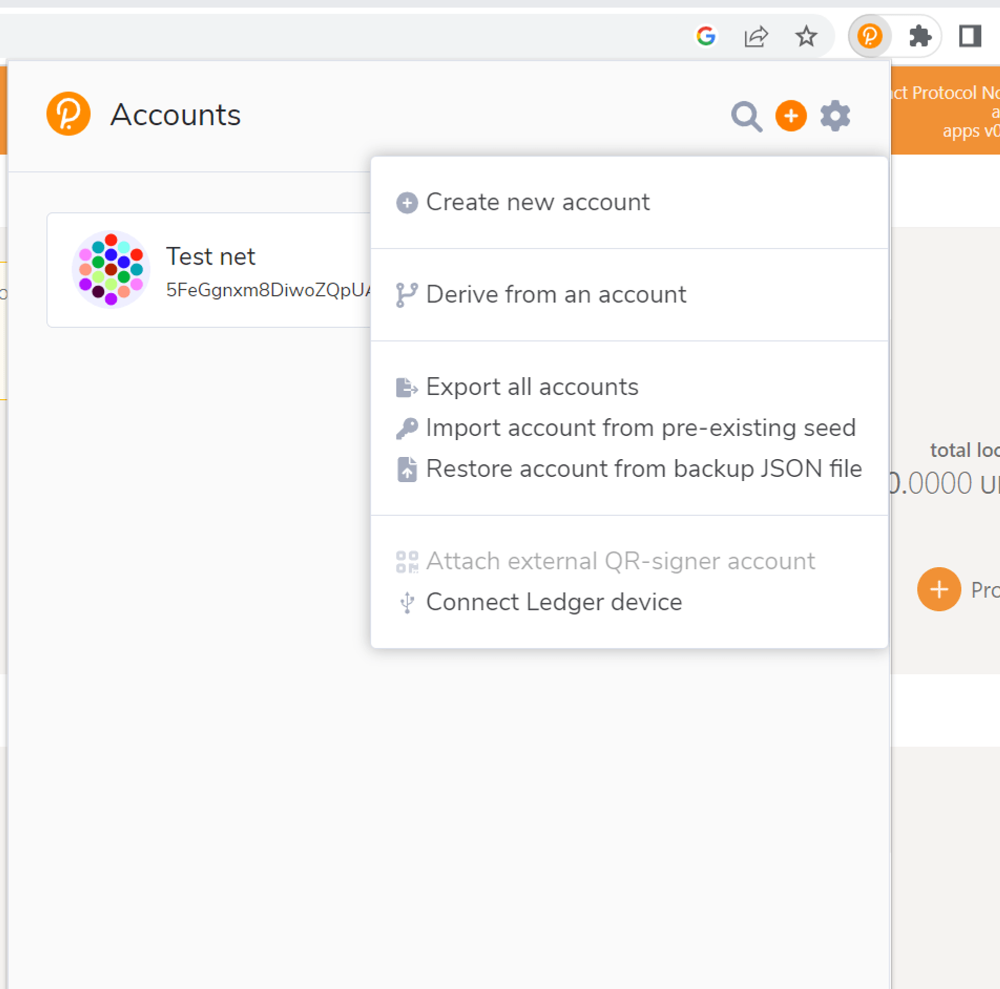

Install Instructions
If on Linux or Mac:
- follow instructions 1-10 from link below: https://docs.substrate.io/install/linux/
If on Windows
-
follow these steps: https://www.omgubuntu.co.uk/how-to-install-wsl2-on-windows-10 Make sure WSL2 is running:
wsl -l -v -
run the next commands inside the VM:
sudo apt-get update sudo apt install --assume-yes git clang curl libssl-dev llvm libudev-dev make protobuf-compiler sudo apt install build-essential curl --proto '=https' --tlsv1.2 -sSf https://sh.rustup.rs | sh source $HOME/.cargo/env rustc --version rustup default stable rustup update rustup update nightly rustup target add wasm32-unknown-unknown --toolchain nightly rustup showrustup +nightly show
Next steps for Linux & Windows
-
Clone the repository:
git clone https://github.com/GlobalBoost/impactprotocol -
Change to the
impactprotocoldirectory:cd impactprotocol -
Build the project:
cargo build --releaseThis will take some time to build the binary depending upon your system configuration.
-
Once the build is done in the above step, run the below command to generate the mining key
./target/release/impact generate-mining-key --chain=impact-testnet -
Import your mining key. Replace your seed which you generated above:
./target/release/impact import-mining-key <replace_your_seed_phrase> \--base-path /tmp/impactnode \--chain=impact-testnet -
Then put your public key you generated before in the command below as author
./target/release/impact \ --base-path /tmp/impactnode \ --chain=impact-testnet \ --port 30333 \ --ws-port 9945 \ --rpc-port 9933 \ --telemetry-url "wss://telemetry.polkadot.io/submit/ 0" \ --validator \ --author public key here \ --rpc-methods Unsafe \ --name ImpactNode \ --password-interactiveThis will ask for a keystore password, enter any random password
-
Now you should begin to mine. You are running an Impact Protocol test net node, please check in the console and you will be seeing the blocks getting finalized
-
You can check your node running by going into the link below
Polkadotjs. If you dont see anything loading check your port address in this case it is
9945, you may have some other port configured, check and replace accordingly.You should see something like shown below 
-
Now you need to install an extension: https://polkadot.js.org/extension on Google Chrome or Firefox. Import account with pre-existing seed that you generated in step 4. Enter your public key and set a password. Its shown below
